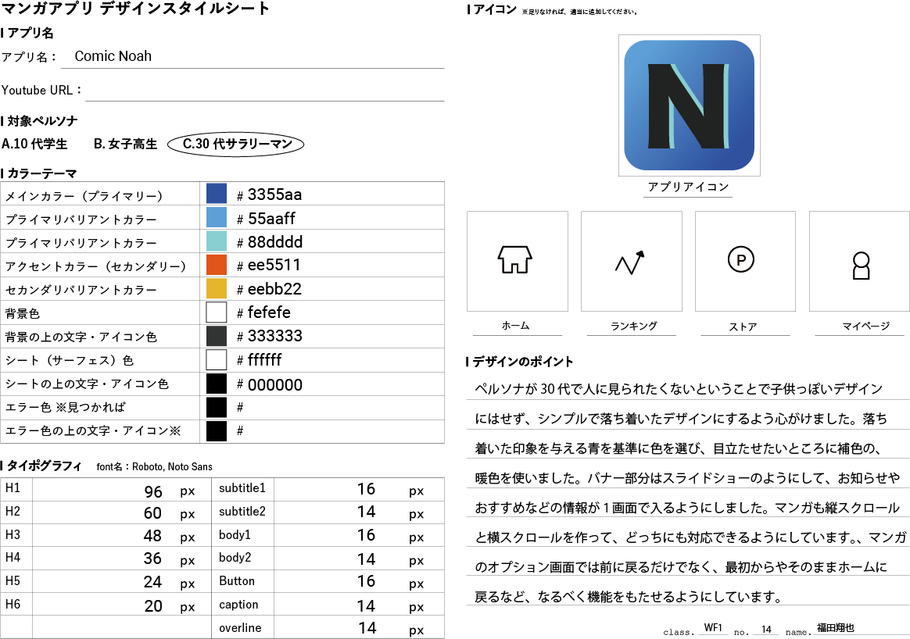

漫画アプリUIデザイン
作成期間
15時間
使用技術
XD
Illustator
作品URL
作品について

授業の課題で作成した漫画アプリのUIデザインになります。ペルソナは30代のサラリーマンで通勤中に漫画を読み、いい年なので周りに漫画を読んでいる姿を見られたくないと思っています。ペルソナから、デザインは落ち着いたものにしようと考えました。名前の由来はノアの方舟のノアから取っています。メインカラーは落ち着いた印象を与える為に青色を採用しました。また、色は基本セーフカラーになるようにしています。
機能


アプリタイトル画面をタップすることで漫画選択画面に移動します。漫画選択画面では、スライドショーを上部に設置しています、次に漫画を続きから読むボタンを置いています。漫画を選択すると話数選択画面に移行します。ここではシェアやお気に入りの設定ができます。読みたい話をタップすることで漫画本編の画面に移ります。漫画本編のページでタップするとオプション画面に移り、漫画のスワイプする方向の変化やホームに戻る機能があります。
仕様書
TOP